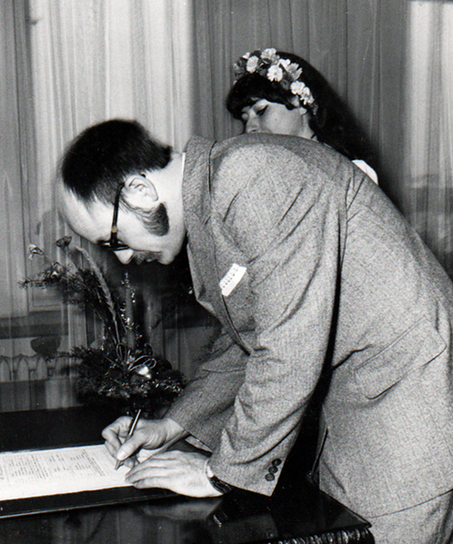

,br>
Mimo skłonności do egzaltacji i potrzeby naśladowania coraz
to kogoś innego, w głębi duszy najbardziej chciałam być kurą
domową. Na dowód tego moja pierwsza w życiu wizytówka taka
właśnie była: Zdzisława Zegadłówna, gospodyni domowa. Było to ówcześnie czymś śmiesznym i mało kto doszukał się w tym filozoficznego dna. Może nie ta klientela. Mieszkałam wtedy w Warszawie, a tam ktoś inny niż zabiegany artysta uchodził za nieudacznika.
Miałam to gdzieś. Byłam już wtedy autorką zbioru wierszy, sporo też publikowałam, mogłam sobie więc pozwolić na taką ekstrawagancję.
Bycie kurą domową tylko ubarwiało mój status, tym bardziej, że wydałam się za poetę i redaktora, a wkrótce i edytora.
Moje pierwsze małżeństwo miało sporo mankamentów, co zdarza się na każdym kroku, ale były też zalety.
Poznaliśmy się tak:
Po publikacji kolejnego mojego wiersza w miesięczniku "Radar", napisał do mnie pan redaktor z Warszawy, Mieczysław Mączka. Że poezja moja mu się podoba i będzie wydawał. Było upalne lato, ja wędrowałam po górach i lasach, łowiłam ryby i zbierałam po plażach muszelki, a do tego byłam śmiertelnie zakochana w kimś, kto wydawał mi się idealny do modelu Lenin i Krupska. List stołecznego redaktora przeczytałam więc z opóźnieniem. Odpisałam grzecznie, że nie uskładałam jeszcze tylu słów, żeby sklecić z nich książeczkę. Że planuję się rozwijać, uczyć, studiuję jeszcze (drugi rok filologii polskiej na UJ), a pisanie traktuję poważnie.
Od zawsze miałam skłonność do rozpisywania się, więc przy okazji zahaczyłam o tuzin wątków, jakie wydały mi się ciekawe przy okazji tej propozycji. Szczerze mówiąc odpisałam dlatego, że autor epistoły użył papieru listowego, na jakim wydrukowano zdjęcie jego głowy. Był łysawy i miał brodę. Z niejasnych dla mnie powodów od dziecka lgnęłam do łysych brodatych mężczyzn, ogoleni zaś wydawali mi się odrażający.
Nierozważnie zdradziłam tę skłonność w moim pierwszym liście. Odpowiedź przyszła na czerpanym papierze. List kończył się zdaniem: Pani Zdzisławo, coś mi mówi, że będzie pani moją żoną.
I tak właśnie się stało. Choć nie od razu, nie romantycznie i nie z rozmachem. Ale o czym innym mogła marzyć Krupska u boku Lenina?
Mój pierwszy ślub odbył się w Warszawie, w USC na Woli, 29 stycznia 1979 roku. Ślubu udzielał pan Figiel.
To była słynna zima stulecia. Skromny poczęstunek dla nielicznych, choć bardzo serdecznych gości był w małej restauracji w Zalesiu Górnym. Mało kto był w stanie tam dotrzeć z powodu zasp, paraliżu komunikacyjnego i mrozu.
Małżeństwo to przetrwało do 1997 roku i zakończyło się rozwodem. Wcześniej jednak chwiało się w posadach, kilka razy runęło z hukiem, coś tam kleiliśmy, coś lepili, ale nie wychodziło, bo kulawe było od początku.
Mimo tego uważam, że pierwsze 10 lat naszego związku było nadzwyczaj ciekawe, na swój sposób udane. Pełne podróży, wspólnej pracy, wspólnych pasji, ale i moich chorób, przeprowadzek, dramatycznych upadków i szczęśliwych wzlotów. Bardzo wiele się nauczyłam w tym czasie i przeżyłam dużo pięknych chwil. Tak staram się ten czas zapamiętać, bo przecież było to moje życie, dobre życie i nie warto z powodu ludzkich ułomności wyrywać tysiące kartek z kalendarza i puszczać je z wiatrem. Choćby dlatego, że nie da się tego czasu przeżyć raz jeszcze, ale inaczej. Kto wie zresztą, czy lepiej.
